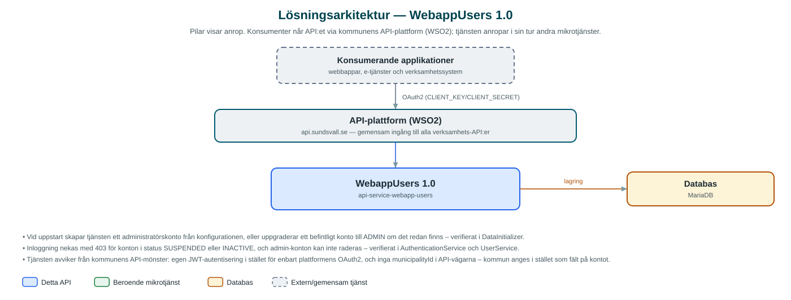

WebappUsers
Användarhantering för webbapplikationer – konton med roller, status och inloggning via JWT.
Om API:et
WebappUsers hanterar användarkonton för webbapplikationer: konton skapas med e-postadress, telefonnummer, kommuntillhörighet, roll och status, och kan därefter hämtas, uppdateras och tas bort. Lösenord lagras alltid hashade och kan bytas via en egen operation.
Tjänsten innehåller även en inloggningsfunktion: användare loggar in med e-post och lösenord och får en JWT-token tillbaka. Konton kan spärras genom statusarna SUSPENDED och INACTIVE, som båda hindrar inloggning. Användaradministrationen skyddas av rollstyrning där endast administratörer kommer åt användarresurserna.
Tjänsten är utformad som en prototyp inom samarbetet Public Service as a Service och avviker från kommunens övriga API:er: den sköter sin egen autentisering med JWT i stället för att enbart förlita sig på API-plattformens OAuth2, och API-vägarna saknar municipalityId.
Det här gör API:et
- Kontohantering – Skapa, hämta, uppdatera och ta bort användarkonton, uppslagna på id eller e-postadress.
- Inloggning med JWT – Inloggning med e-post och lösenord ger en signerad JWT-token med användarens roll.
- Roller och behörighet – Användare har rollen USER eller ADMIN; endast administratörer når användaradministrationen och admin-konton kan inte raderas.
- Kontostatus – Statusarna SUSPENDED och INACTIVE spärrar inloggning utan att kontot tas bort.
- Lösenordshantering – Lösenord lagras hashade och byts via en separat operation.
API-dokumentation
API:ets samtliga resurser, parametrar och datamodeller finns beskrivna i en OpenAPI-specifikation som är hämtad ur källkodsförrådet. Den kan utforskas interaktivt i Swagger UI eller laddas ner som YAML.
Teknisk dokumentation
Nedan beskrivs hur tjänsten är uppbyggd, vilka andra tjänster den anropar och vad som krävs för att driftsätta den. Informationen är härledd ur källkoden och dess konfiguration på GitHub.
Arkitektur

API:et är en mikrotjänst (Java 25, Spring Boot via kommunens gemensamma tjänsteplattform dept44 (8.0.4), byggd med Maven). Konsumenter når tjänsten via kommunens gemensamma API-plattform (WSO2) på api.sundsvall.se – tjänsten anropas aldrig direkt. Lagring: MariaDB med Flyway-migrationer; användarkonton med roll, status och hashade lösenord lagras i databasen.
Teknikstack
- Språk: Java 25
- Ramverk: Spring Boot via kommunens gemensamma tjänsteplattform dept44 (8.0.4), byggd med Maven
- Databas: MariaDB med Flyway-migrationer; användarkonton med roll, status och hashade lösenord lagras i databasen
- Övrigt: Spring Security med eget JWT-filter, jjwt för tokenhantering
Beroenden till andra mikrotjänster
Inga anrop till andra mikrotjänster hittades i källkodens konfiguration.
Konfiguration och driftsättning
- MariaDB-anslutning via miljövariabler (ENV_DB_URL, ENV_DB_USERNAME, ENV_DB_PASSWORD); schemat versionshanteras med Flyway
- JWT-hemlighet och giltighetstid via miljövariabler (JWT_SECRET, JWT_EXPIRATION)
- Uppgifter för ett administratörskonto (e-post, lösenord, telefonnummer, kommun) som skapas automatiskt vid uppstart
- Inloggningsvägarna är öppna; övriga användarresurser kräver rollen ADMIN
Noterbart ur källkoden
- Vid uppstart skapar tjänsten ett administratörskonto från konfigurationen, eller uppgraderar ett befintligt konto till ADMIN om det redan finns – verifierat i DataInitializer.
- Inloggning nekas med 403 för konton i status SUSPENDED eller INACTIVE, och admin-konton kan inte raderas – verifierat i AuthenticationService och UserService.
- Tjänsten avviker från kommunens API-mönster: egen JWT-autentisering i stället för enbart plattformens OAuth2, och inga municipalityId i API-vägarna – kommun anges i stället som fält på kontot.
- Den incheckade specifikationen (api-docs.yaml) beskriver uppslag på personnummer och partyId, men koden exponerar uppslag på id och e-postadress – koden är sanningskällan. Spec-filen i testkatalogen är tom.
- README hänvisar till repot api-service-users i organisationen Public-Service-as-a-Service – tjänsten är framtagen inom det samarbetet.
Källkod
Källkoden är öppen och finns hos Sundsvalls kommun på GitHub. I källkodsförrådet finns även instruktioner för att klona, konfigurera och starta tjänsten i egen miljö.